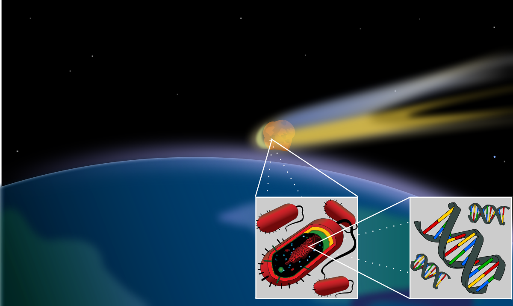

Панспермия — гипотеза о возможности переноса живых организмов или их зародышей через космическое пространство. Следствием этой гипотезы является предположение о зарождении жизни на Земле в результате занесения её из космического пространства.

Теория панспермии
Первое известное упоминание термина относится к сочинениям греческого философа Анаксагора, жившего в V веке до нашей эры. В более научной форме предположения о возможности переноса жизни через космическое пространство были высказаны учеными в XVIII в. Детально данная гипотеза была обоснована в трудах Сванте Аррениуса, который обосновал путём расчетов принципиальную возможность переноса бактериальных спор с планеты на планету под действием давления света. Наиболее влиятельными сторонниками гипотезы были Фред Хойл и Чандра Викрамасингхе. В 1974 году ими была предложена гипотеза, согласно которой космическая пыль в межзвёздном пространстве в основном состоит из органических веществ, что позже было подтверждено наблюдениями. Не остановившись на этом, Хойл и Викрамасингхе выдвинули предположение о том, что живые организмы продолжают поступать из космоса в атмосферу Земли, вследствие чего возникают эпидемии, появляются новые заболевания и создаются условия для макроэволюции
Начиная с начала 60-х годов XX века в научных журналах стали появляться статьи об обнаружении в некоторых метеоритах структур, напоминающих отпечатки одноклеточных организмов, а также о случаях детектирования в их составе сложных органических молекул. Однако факт их биогенного происхождения другими учёными активно оспаривался.
Подобно многим теориям, у панспермии есть сторонники и противники в научном сообществе. По поводу выживаемости жизни при входе в атмосферу после пребывания на протяжении тысяч лет в космосе, где она подвергалась космической радиации, есть сомнения. Однако нет никаких доказательств того, что это невозможно. И даже если выяснится, что жизнь на Землю попала из космоса, у современной науки нет никакой информации о том, как она возникла там.